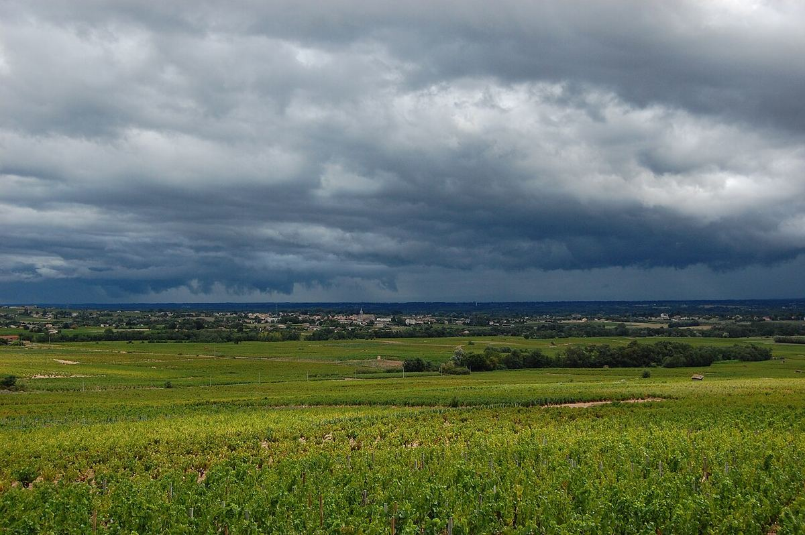

WHITE
Beaujolais, between the Mâconnais and Lyon, is the home of Gamay. Its wines range from Beaujolais Nouveau, released just weeks after the harvest, to the ten crus of the north, grown on granite soils.

Beaujolais takes its name from Beaujeu, the former seat of the region's lords. For centuries its wine supplied the nearby city of Lyon, its natural market. Gamay, banned in 1395 from Burgundy's best vineyards by Duke Philip the Bold, found in these hills a home where it became the dominant variety. In the twentieth century the Beaujolais Nouveau phenomenon, a young wine released a few weeks after the harvest, brought the region considerable international fame; since 1985 it has gone on sale on the third Thursday of November. In recent decades many producers have placed the emphasis on the crus and on more structured wines.
The region lies south of the Mâconnais, mainly in the Rhône département, along the eastern slopes of the Beaujolais hills, which shelter it from westerly winds. The climate is semi-continental, with a slight Mediterranean influence that comes up the Saône valley. Although it shares a historical organisation with Burgundy and is often included within it, Beaujolais has its own identity and its own interprofessional body.
There is a clear geological divide. The north rests on granite, often weathered into a granitic sand known locally as gore, as well as on schist and other crystalline rocks; this is where the crus and most of Beaujolais-Villages are found. The south, the area of the Pierres Dorées, has clay-limestone and sedimentary soils and produces mainly Beaujolais.
There are three tiers: Beaujolais, Beaujolais-Villages and ten crus sold under their own names, often without any mention of Beaujolais on the label: Saint-Amour, Juliénas, Chénas, Moulin-à-Vent, Fleurie, Chiroubles, Morgon, Régnié, Brouilly and Côte de Brouilly. Fleurie and Chiroubles are usually associated with aromatic, lighter wines; Moulin-à-Vent and Morgon with more structured wines suited to ageing; and Côte de Brouilly occupies the slopes of Mont Brouilly, made of ancient volcanic rock.
Gamay, with its purplish skin and white flesh, is almost the only red variety. A widespread technique is semi-carbonic maceration: whole bunches are placed in the tank and part of the fermentation takes place inside the intact berries, giving fruity wines with bright colour and soft tannins. Many cru producers also use more traditional methods, with destemming and longer ageing. Small quantities of white Beaujolais, from Chardonnay, and of rosé are also made.